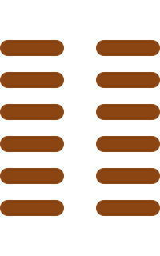

第二卦
坤卦

卦辞
元亨，利牝马之贞。君子有攸往，先迷，后得主，利。西南得朋，东北丧朋。安贞吉。
坤卦象征着地，代表柔顺、包容、承载。卦辞意为：至为亨通，有利于母马的贞正。君子有所前往，先迷失方向，后得到主人，有利。西南方向得到朋友，东北方向失去朋友。安守正道吉祥。
彖传
至哉坤元，万物资生，乃顺承天。坤厚载物，德合无疆。含弘光大，品物咸亨。牝马地类，行地无疆，柔顺利贞。君子攸行，先迷失道，后顺得常。西南得朋，乃与类行。东北丧朋，乃终有庆。安贞之吉，应地无疆。
彖传说：至善的坤元，万物赖以生长，顺应着天道。大地深厚载物，德行广大无边。包含着宏大光明的品质，万物都得以亨通。母马与地同类，在大地上行走无边无际，柔顺而有利于正道。君子出行，先迷失道路，后顺应得到常规。西南得朋，是与同类同行。东北丧朋，是最终有喜庆。安守正道的吉祥，应和着大地的无边无际。
象传
地势坤，君子以厚德载物。
象传说：大地的形势是坤卦，君子应当效法大地，以深厚的德行来承载万物。这教导我们要有包容之心，宽广的胸怀。
爻辞
初六：履霜，坚冰至
踩到霜，坚硬的冰就要到来。
初六爻位于最下方，象征踩到霜。这表示事情的开始，见到微小的征兆就能预见未来的发展。踩到霜就知道坚冰将要到来，要有预见性。
六二：直方大，不习无不利
正直、方正、广大，不学习也没有不利的。
六二爻得中得正，具有正直、方正、广大的品质。即使不特别学习，也没有不利的地方，因为本性纯善。
六三：含章可贞，或从王事，无成有终
蕴含文采可以守正，或者跟随君王做事，没有成就但有好的结果。
六三爻位置不当，但有内在的美德。可以坚守正道，或者辅佐君王做事，虽然没有显著成就，但最终会有好的结果。
六四：括囊，无咎无誉
收紧袋口，没有灾害也没有赞誉。
六四爻接近君位，应当谨慎。如同收紧袋口一样，谨言慎行，虽然没有赞誉，但也没有灾害，处于安全状态。
六五：黄裳，元吉
黄色的下裳，大吉大利。
六五爻居中尊位，黄色的下裳象征居中守正，不越位。这是大吉大利的，因为符合中庸之道。
上六：龙战于野，其血玄黄
龙在田野上战斗，它的血是玄黄色。
上六爻位于坤卦极点，阴极阳生。龙在田野战斗，象征阴阳交战，血的玄黄色表示天地之色的混合，预示着变化即将到来。
用六：利永贞
有利于永远守正。
用六是坤卦特有的爻辞，表示永远坚守正道是有利的。坤卦的本质是柔顺顺从，永久保持这种品质就会有利。